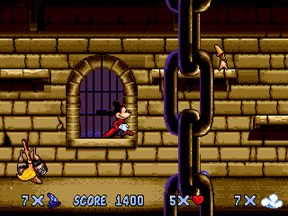
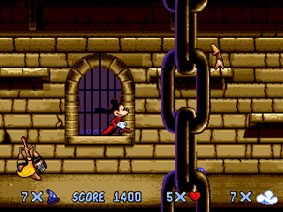

Partie Commune
Description rapide
Le principe du jeu est d'associer la progression du joueur avec une synthètisation des Graphismes, du Sound Design, de l'UI et du Game Design.
Le joueur incarne un jeune épéiste au japon durant la période médiéval.
Le jeu commence par la perte de la vue de ce jeune épéiste après un duel contre un maître d'armes.
Suivant le conseil de ce maître, il part perfectionner son art en allant affronter ses sbires, avec comme ultime but de le vaincre en duel.
Description expérience et intéractivité
L'expérience du jeu est changeante, on a au début du jeu une expérience submergeante, complexe et à la fin du jeu une expérience synthétique.
Le joueur contrôle les déplacements et l'épée du personnage joueur (le jeune épéiste aveugle), inspiration de Sekiro sur les déplacements et le combat à l'épée.
Moodboard
Inspiration Sonores
Inspirations Surchargée
Inspirations Synthétique
Une problèmatique technique
Quand le joueur réussit un combat de boss, l'expérience de jeu se synthétise.
Comment passer d'un état de jeu en un autre plus synthétique, tout en permettant au joueur de transposer ses connaissances ?
Ce problème a plusieurs facettes :
-
Le changement graphique est le plus visible et celui qui peut en premier faire sortir le joueur de son expérience.
Les graphismes devront être simplifiés, les détails masqués tout en gardant une même direction artistique tout du long.
-
Le changement sonore est aussi très facilement perceptible.
Le sound design doit être simplifié et les éléments non utiles au gameplay doivent peu à peu disparaître.
La musique doit être simplifié tout en gardant une direction artistique cohérente et des mélodies reconnaissables.
-
Le changement d'UI est moins facilement visible, mais elle peut perdre ou demander un effort supplémentaire au joueur sur le moyen terme.
L'UI devra être simplifié pour afficher seulement les informations utiles tout en ne rendant pas l'expérience du joueur plus complexe.
-
Le Game Design est l'élément le plus dangereux à changer, il ne sera pas le dernier visible mais le premier ressenti.
Les changements devront uniquement simplifier l'expérience du joueur sans la limiter.
De plus les contrôles devront être intuitives pour ne pas avoir besoin d'une nouvelle phase de tutoriel à chaque changement d'expérience.
Public Cible
Partie Spécifique Prog
Description Problématique
Bibliographie
Description de la solution
Partie Spécifique GD
Description Détaillée
Autres Concepts
Processus
 fic

fic
